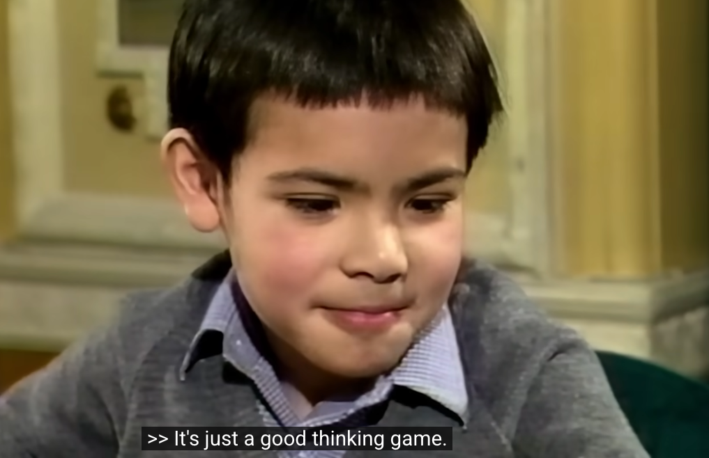
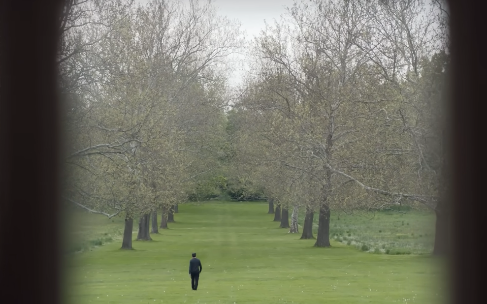

2012年，Jeff Hinton（2024年诺贝尔奖得主）带两个学生，夺得了ImageNet竞赛第一名，把图像识别的准确率从之前的75%提到85%。
这是一次飞跃。引得巨头们发起了一项招募Jeff的竞拍，最后Google以创纪录的4400万美金成交。参与竞标的有四家公司，除了微软、百度、Google三家巨头之外，第四家公司就是今天纪录片的主角——DeepMind。
那是一次秘密竞拍，没人知道对手是谁、出价多少，我当时以为第四家公司是IBM，因为当时IBM的语音识别是世界最好的。但直到10年后我才知道，居然是成立仅一年、伦敦的小创业公司DeepMind。它那时候总估值也就几千万吧，竟然敢来参加世界级的竞拍。可以看到，那个时候DeepMind已经体现出王者之气。所以后来DeepMind能够发展到今天这个样子，我一点都不奇怪。
这个故事，是从地平线创始人余凯那里听到的。那时我就对 Demis 起了很大兴趣，也发现正好有个纪录片 <The Thinking Game>，不过当时只能在Netflix上看。上周，Google把这个片子发布到YouTube免费公开，观看次数破千万。
作为DeepMind的创始人，Demis 为什么愿意为了招募一个顶级人才而敢于与巨头竞拍？这个纪录片里给出了答案。
天生对大脑感兴趣
Demis 从小就是国际象棋神童。6岁时夺得英国U8冠军，当被问到为什么喜欢下棋，6岁的他在镜头前，淡淡地说了一句：
It’s just a good thinking game.

12岁时参加世界比赛，地点在山顶教堂里。数百名选手在各自棋盘上对战，Demis跟对方厮杀10小时，局面依然是平手。最后时刻疲惫的他突然意识到，比赛现场这么多聪明的大脑，都用在小小的棋盘上，是不是一种浪费？如果把现场300个聪明大脑连接起来组成一个思考系统，能不能解决癌症问题？
于是，他没有继续坚持平局，选择投子认输。
Although I love chess, this is not the right thing to spend my whole life on.
他的人生目标，从下棋转向人类大脑组合系统——AGI。
他真正感兴趣的，是大脑。
- 所以他17岁的时候，放弃百万英镑的offer，选择去剑桥；
- 30岁放弃自己成功创业的游戏公司，选择去UCL读神经科学博士；
- 在DeepMind快速成长期，选择卖给Google，因为这能帮他更快破解AGI；
他创办DeepMind的核心理念，也是：
To fill DeepMind with the most brilliant scientists in the world. Then we have the human brains necessary to create an AGI system."
这就解释了本文开头的那个故事：为什么愿意为了招募一个顶级人才而敢于与巨头竞拍？
我感觉他是带着任务来地球的，这个任务就是破解人类大脑。
人总是要有一个痴迷的东西。选择痴迷于什么，可能决定了你人生的体验。痴迷绘画、足球、写作、帮助穷人、治病救人、教书育人、赚钱、权利、吹捧、女色、网络、游戏、躺平、流浪。痴迷大脑可能是其中最有挑战的。
最燃时刻，就在那1秒
从 Board Game 到 StarWar，DeepMind在破解大脑的路上一次次突破。到最后 AlphaFold，是摘取皇冠前的一步。
AlphaFold的突破异常艰难，耗费大量时间、资金和人员。但在获得关键突破之后，他们没有选择像基因测序那样卖服务赚钱，而是决定破解世界上所有蛋白质结构，并公开给全世界免费使用。
这个决定在片子里，只有1秒钟，在一个内部讨论会上。那是当时会议的原始影像留存，不是摆拍。这1秒钟的决定，牵涉的是诺奖级别的成果，但对他来说是如此自然。
Solve intelligence. Then let other people use it to solve everything else.
他认为自己的使命是解决最核心的问题。我注意到，AlphaFold会议室的玻璃门上，贴的是冯诺依曼和曼哈顿计划。
让我印象深刻的台词
It doesn’t help if you have the tallest ladder when you’re going to the moon.
对于要去太空的人来说，即便做出了世界上最长的梯子，有什么意义呢？
My whole life’s goal is to solve AGI and use AI to solve all the world’s most complex scientific problems.
I think it’s bigger than the internet, bigger than mobile.
（仔细想想，对比起来，internet和mobile确实如此）
People often ask me “what if you’re wrong in AGI is quite far away?”.
I never worry about that. I actually worry about the reverse.
I worry that it’s coming faster than we can really prepare for.
为什么叫Thinking Game？
片中有提到Bullfrog的同事跟17岁的Demis的一次对话：
What is it you want to do?
I want to be the person that solves AI.
Solve 这个词，在全片里出现了很多次。因为他的人生信念从6岁就是闭环的——solve the thinking game。下棋只是表象之一，12岁的那次顿悟，将thinking game从下棋转向了AGI。
Demis的前半生，几乎都在跟各种游戏打交道。我猜，在Demis内心的世界观里，人类世界是无数个设计好的游戏，而圣杯就是大脑的设计——thinking game，他想破解这个游戏。
另外一个印象深刻的词：track
作为英国第二名，他原本有明确的成为职业棋手的track，但他没选择。后面读博期间，发表了当年全球最优秀的六篇论文中的一篇，有成熟的科研track，但他也没有选择。
就像片子里提到的AlphaGo对阵李世石的第37手那样，不遵循世俗track的一手，才是最妙的。
印象深刻的画面
看片子的过程中，无数次感叹：拍得太美了！不仅内容引人深思，画面更是令人陶醉。

Demis在片子里，捧读的那本书是《The Fabric of Reality》，中文名是《真实世界的脉络》。
Musk和Naval也曾推荐过。